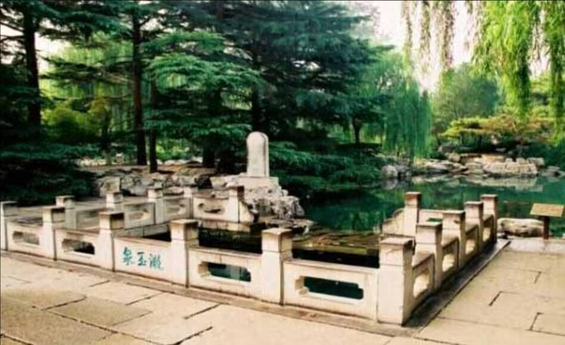
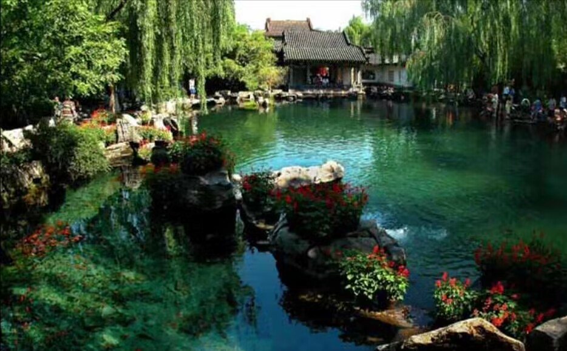

趵突泉简介
趵突泉位于山东省济南市趵突泉南路1号，位于济南趵突泉公园。
趵突泉位居济南“七十二名泉”之首，被誉为“天下第一泉”。趵突泉是最早见于古代文献的济南名泉。2013年8月成功申请为国家AAAAA级旅游景区。趵突泉先后被评为全国十大优秀园林、“十佳”公园等，是首批国家重点公园。
趵突泉北临泺源堂，西傍观澜亭，东架来鹤桥，南有碑刻长廊围合。泉池东西长30公尺，南北宽20公尺，泉分三股涌出平地，泉水澄澈清洌。泉的四周有大块砌石，环以扶栏，可凭栏俯视池内三泉喷涌的奇景。在趵突泉附近，散布着金线泉、漱玉泉、洗钵泉、柳絮泉、皇华泉、杜康泉、白龙泉等三十多个名泉，构成了趵突泉泉群。 其中漱玉泉与宋代女词人李清照有关，她的故居就在漱玉泉边，因有文集《漱玉集》而得名，泉北的李清照纪念堂正是为纪念这位著名的词人而修建的。值得一提的是趵突泉公园的南大门，布置得富丽堂皇、雍容华贵，大门上的横匾"趵突泉"蓝底金字，是清朝乾隆皇帝的御笔，有人誉为中国园林"第一门"，一点也不为过。
趵突泉边立有石碑一块，上题"第一泉"，其色为墨绿色，为清同治年间历城王钟霖所题。如今趵突泉泉北有宋代建筑"泺源堂"(现为清代重建)，堂厅两旁楹柱上悬挂有"云雾润蒸华不注，波涛声震大明湖"的对联；西南有明代建筑"观澜亭"，亭前水中矗立的石碑，上书"趵突泉"三字 ，为明代书法家胡缵宗所写，池东为"来鹤桥"，桥南端耸立一古色古香的木牌楼，横额上有"洞天福地"、"蓬山旧迹"字样。
趵突泉水从地下石灰岩溶洞中涌出，其最大涌量达到24万立方米/日，出露标高可达26.49米。水清澈见底，水质清醇甘洌，含菌量极低，经化验符合国家饮用水标准。泉水一年四季恒定在摄氏18度左右，严冬水面上水气袅袅，像一层薄薄的烟雾，一边是泉池幽深，波光粼粼，一边是楼阁彩绘，雕梁画栋构成了一幅奇妙的人间仙境，当地人称之为"云蒸雾润"。
趵突泉水清澈透明，味道甘美，是十分理想的饮用水。相传乾隆皇帝下江南，出京时带的是北京玉泉水，到济南品尝了趵突泉水后，便立即改带趵突泉水，并封趵突泉为"天下第一泉"。泉在一泓方池之中，北临泺源堂，西傍观澜亭，东架来鹤桥，南有长廊围合，景致极佳。泉池中放养金鱼，大者长逾三尺。泉东侧隔来鹤桥有望鹤亭茶社，专为游人提供用趵突泉水沏的香茶，2元一大碗。
趵突泉比较好的旅游时间在3-5月和9-11月。尤其9月-11月最佳。经过7、8月集中降水的补充后，济南市的地下水位会明显升高，市区内的泉水在秋季会有争相喷涌独特场面，因此去济南旅游的最佳时间是每年雨季后的秋天。
湛露泉
湛露泉位于趵突泉公园南门内假山北侧，与石湾泉、酒泉三泉并列。泉池为自然石砌，长、宽各4米左右，以自然石驳岸，参差曲折，池深约1.5米。泉名刻在假山北侧石壁上。湛露泉位于趵突泉公园内白雪楼前，东连石湾泉，金《名泉碑》,明《七十二名泉诗》均收录。因泉水清湛，甘香味美而得名。济南七十二名泉个个味甘水甜，湛露泉能在诸泉中得此佳名，可见其味必定不同凡响。明晏璧在《七十二泉诗》中咏湛露泉诗云：“泉如湛露味甘香, 入如三焦齿颊凉。通乐古园饶爽气，厌厌夜饮醉无妨。”
漱玉泉
漱玉泉位于趵突泉景区李清照纪念堂前。泉名取自《世说新语•排调》之“漱石枕流”一典。东、西、北面饰石雕栏杆，池北内壁嵌“漱玉泉”石刻，为济南当代书画家关友声1956年书写，字迹遒劲俊秀，落落大方。泉池长4.8米，宽3.1米，深2米。 水自池底及池壁不断涌出，形成串串水泡，飘至水面散裂，丝丝作响，池水由南壁漫石溢出，注入石砌水潭中。 李清照纪念堂与易安旧居
李清照纪念堂与易安旧居座落于漱玉泉畔，始建于1959年，现今面积达4000余平方米，典型的宋代建筑。李清照是封建时代为数不多的女作家中最优秀的一个，歇山飞檐绮丽多姿，悬山抱厦丰富多变，曲廊凹凸有致，院落花木扶疏，飞亭叠瀑，展室内涵风格各异，从图、文、像、书、画等不同层面展示了一代词人的伟大成就与丰富的一生。
无忧泉
无忧泉在趵突泉公园，北连趵突泉，池岸山石垒砌，凸凹有致，高低错落。名此泉被填埋已久。1989年修复，池呈不规则形，面积672平方米，以自然石缀岸，石矾卧波，池内水草嫩绿，锦鱼嬉戏，清水漫石穿隙流进趵突泉内。四周松柏泄翠，杨柳垂荫，修竹储润。
白雪楼
白雪楼,原为明代著名文学家李攀龙的藏书处。李攀龙，字于鳞，号沧溟居士，是明代著名的文学家，中国文学史上“后七子”之一。他考中进士后，曾在陕西任按察副使，明世宗嘉靖三十五年辞职东归，筑楼于鲍山下和大明湖畔，均称“白雪楼”。后人为纪念他、收藏其书，在趵突泉畔建楼，仍名为“白雪楼”。白雪楼的四周绿水环绕，山石掩映，相邻有湛露泉、酒泉、石湾泉，微风徐徐，景色清幽。登楼可俯瞰周围泉水竞流，远眺公园秀色，旧时“济南十六景”之一的“鲍山白雪”指的便是这座白雪楼。